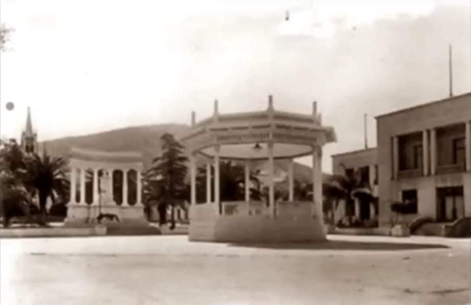

بلدية العفرون :
في 22-04-1863 صدر القرار المشيخي الفرنسي " سيناتوس كونسيلت" القاضي ضمن لوائحه بتحديد وترسيم القبائل والدوائر في الجزائر، من أجل ملء الفراغ التنظيمي بالقيادة الاستعمارية وبعده تمّ اعتماد ثلاثة (3) أصناف من البلديات:
-
Commune indigène بلدية أهلية :
في المناطق الريفية، سكانها من الأهالي، ويحكمها ضابط عسكري.
-
Commune mixte بلدية مختلطة:
مشكلة من أغلبية أهلية، تهيمن عليها الإدارة الفرنسية لخدمة العنصر الأوروبي، يحكمها متصرف أوروبي مع اللجنة البلدية .
- Commune de plein exercice بلدية مُتصرّفة :
تسكنها أغلبية أوروبية، مع إدماج بعض الدواوير المجاورة للرّفع من ميزانيتها، يحكمها عمدة البلدية على رأس المجلس البلدي.
و كانت العفرون في تلك الحقبة منطقة تضمّ جزءًا كبيراً من قبيلة سوماتة وجزءًا آخر من قبيلة حجوط .
أولاً : قبيلة سوماتة:
قبيلة قديمة تأسست بموجب مرسوم 05-12-1866 الجريدة الرسمية لسنة 1867 ص32 وهي تجمّع اثنين من بلدية-دوار
هما:
بلدية دوار وادي السبت: إقليم قبيلة سوماتة القديم و الذي تفوق مساحته 11 هكتار.
تأسّست كبلدية دوار بموجب مرسوم 05-12-1866.
- جزء منها ( 518 هـ ) تم اقتطاعه لإنشاء بلدية متصرّفة بومدفع، وبقي ( 10.883 هـ )
- ألحقت بالبلدية المختلطة حمّام ريغة الاختصاص القضائي بومدفع محكمة مليانة.
- عدد السكان من الأهالي: 3225 نسمة.
- الجماعة المسيّرة لبلدية دوار وادي السبت تتكون من 14 عضواً يمثّلون الفرق التالية:
{ العمامرية، تلاوين، مجبر، برج = عضوان 02 }
بني يخلف، مسكورة، زوج سمان، سيدي سعيد = عضوان 02
بني محسن، دحامنية، وادي الجمعة، بير الكيفان = عضوان 02
نمايرية، عين بنّمرة، سيدي يحيى، سيدي موسى = عضوان 02
أولاد أحمد، كاف الطيور، عين بن رحمون، وطية مصطفى = عضوان 02
الرّوابح، سيدي الحاج، عين غيلة عربي، سيدي أحمد النّمري = عضوان 02
زمّول، عين بوڨرناز، خمّوجة = عضوان 02
بلدية دوار وادي جر: اقليم قبيلة سوماتة القديم و الذي تفوق مساحته 14 هكتار
تأسّست كبلدية دوار بموجب مرسوم 05-12-1866
قسم منها ( 4.328 هـ ) اقتُطع لتمديد إقليم البلدية المتصرّفة بومدفع
الباقي ( 9.875 هـ ) المشكّل لبلدية دوار وادي جر، والتي ألحقت بالبلدية المختلطة حمام ريغة، الاختصاص القضائي لبومدفع، محكمة مليانة
عدد السكان: 2227 نسمة من الأهالي
الجماعة المسيّرة لبلدية دوار وادي جر تتشكّل من 12 عضواً يمثّلون الفرق التالية:
لدّحامنية، مرابية، خيارة، عين الطيب، أولاد يوسف = 03 أعضاء
أولاد محمود، بوقيطون، خبّازة، المرجة، وادي الشرفاء، الزاوية، جبّار الزحايف، تيڨراتين= 03 أعضاء
بوڨمُّو، ڨبالة، سيدي عمر = عضوان 02
ساحل، مزداد، عفرون ، دار بن عدّة = عضوان 02
معايف، وادي الزبّوج، بير خليفة، تيزي ولاّفة = عضوان 02
كانت العفرون فرقة تابعة لبلدية دوار وادي جر، البلدية المختلطة حمام ريغة، بموجب مرسوم 05-12-1866 وبصدور القانون البلدي الفرنسي في 05-04-1884 تحوّلت العفرون إلى بلدية Commune de plein exercice متصرّفة .
بلدية العفرون المتصرفة:
عدد السكان الأهالي: 2185 ساكن، موزّعين كما يلي:
ثلاث مائة و تسعة و خمسون ساكن في قُرى ومزارع بورومي والعفرون .
ألف و ثمان مئة ساكن من الفرق التابعة لدوار بلدية وادي جر المُلحقة ببلدية العفرون.
فِرَق الأهالي المكوّنة لبلدية دوار وادي جر هي:
فرقة بني جماعة.
فرقة بني مويمن.
فرقة الهاشم
فرقة زاوية اولاد حميدان.
خلاصة:
العفرون بين سنة 1866 و 1884 كانت فرقة تابعة لبلدية دوار وادي جر الملحقة ببلدية حمام ريغة المختلطة و بعد سنة 1884 أصبحت بلدية ذات تصرّف تام.
بعـد الاستقـــلال:
من 1962 إلى سنة 1967: الفراغ الإداري.
من 1967 إلى 1981: صدور أول قانون بلدي وهو الأمر 67-24
المؤرخ في 18-01-1967.
من 1981 إلى 1984: تعديل قانون البلدية. 04-07-1981.
بعد سنة 1984 صدور القانون 84-09 المؤرخ في 04-02-1984 المتضمن التنظيم الإقليمي للبلاد، وذلك بعد قرن عن صدور القانون البلدي الفرنسي، والذي حدّد أحياء بلدية العفرون، وهيز
بني جماعة.
بني مويمن.
بورومي.
أولاد حميدان.
قـدّاح.
أولاد حمّودة.
بويغــران.
( الجريدة الرسمية 19-12-1984 ص 2197 )
بقلم :
الأستاذ زكرياء عامر .
بلدية العفرون:
في 22-04-1863 صدر القرار المشيخي الفرنسي " سيناتوس كونسيلت" القاضي ضمن لوائحه بتحديد وترسيم القبائل والدوائر في الجزائر، من أجل ملء الفراغ التنظيمي بالقيادة الاستعمارية وبعده تمّ اعتماد ثلاثة (3) أصناف من البلديات:
-بلدية أهلية Commune indigène:
في المناطق الريفية، سكانها من الأهالي، ويحكمها ضابط عسكري.
-بلدية مختلطة Commune mixte :
مشكلة من أغلبية أهلية، تهيمن عليها الإدارة الفرنسية لخدمة
العنصر الأوروبي، يحكمها متصرف أوروبي مع اللجنة البلدية.
-بلدية مُتصرّفة Commune de plein exercice:
تسكنها أغلبية أوروبية، مع إدماج بعض الدواوير المجاورة للرّفع
من ميزانيتها، يحكمها عمدة البلدية على رأس المجلس البلدية.
و كانت العفرون في تلك الحقبة منطقة تضمّ جزءًا كبيراً من
قبيلة سوماتة وجزءًا آخر من قبيلة حجوط.
أولاً: قبيلة سوماتة:
قبيلة قديمة تأسست بموجب مرسوم 05-12-1866 الجريدة الرسمية لسنة 1867 ص32 وهي تجمّع اثنين من بلدية-دوار وهما:
بلدية دوار وادي السبت:
إقليم قبيلة سوماتة القديم و الذي تفوق مساحته 11 هكتار.
تأسّست كبلدية دوار بموجب مرسوم 05-12-1866.
جزء منها (518ه) تم اقتطاعه لإنشاء بلدية متصرّفة بومدفع، وبقي
(10.883 ه).
-ألحقت بالبلدية المختلطة حمّام ريغة الاختصاص القضائي بومدفع محكمة مليانة.
- عدد السكان من الأهالي:
3225نسمة
-الجماعة المسيّرة لبلدية دوار وادي السبت تتكون من 14 عضواً يمثّلون الفرق التالية : ( العمامرية، تلاوين، مجبر، ,برج = عضوان 02)
-بني يخلف، مسكورة، زوج سمان، سيدي سعيد = عضوان 02.
-بني محسن، دحامنية، وادي الجمعة، بير الكيفان = عضوان 02.
- نمايرية، عين بنّمرة، سيدي يحيى، سيدي موسى = عضوان 02.
- أولاد أحمد، كاف الطيور، عين بن رحمون، وطية مصطفى = عضوان 02.
-الرّوابح، سيدي الحاج، عين غيلة عربي، سيدي أحمد النّمري = عضوان 02.
-زقول، عين بوڨرناز، خمّوجة = عضوان 02.
بلدية دوار وادي جر:
اقليم قبيلة سوماتة القديم و الذي تفوق مساحته 14 هكتار.
-تأسّست كبلدية دوار بموجب مرسوم 05-12-1866.
-قسم منها ( 4.328 هـ ) اقتُطع لتمديد إقليم البلدية المتصرّفة بومدفع.
-الباقي ( 9.875 هـ ) المشكّل لبلدية دوار وادي جر، والتي ألحقت بالبلدية المختلطة حمام ريغة، الاختصاص القضائي لبومدفع، محكمة مليانة.
-عدد السكان: 2227 نسمة من الأهالي.
الجماعة المسيّرة لبلدية دوار وادي جر تتشكّل من 12 عضواً
يمثّلون الفرق التالية:
-الدّحامنية، مرابية، خيارة، عين الطيب، أولاد يوسف = 03 أعضاء.
-أولاد محمود، بوقيطون، خبّازة، المرجة، وادي الشرفاء، الزاوية، جبّار الزحايف، تيڨراتين= 03 أعضاء.
-بوڨمُّو، ڨبالة، سيدي عمر = عضوان 02.
- ساحل، مزداد، عفرون ، دار بن عدّة = عضوان 02.
- معايف، وادي الزبّوج، بير خليفة، تيزي ولاّفة = عضوان 02.
كانت العفرون فرقة تابعة لبلدية دوار وادي جر، البلدية المختلطة حمام ريغة، بموجب مرسوم 05-12-1866 وبصدور القانون البلدي الفرنسي في 05-04-1884 تحوّلت العفرون إلى بلدية متصرّفة Commune de plein exercice.
بلدية العفرون المتصرفة:
عدد السكان الأهالي: 2185 ساكن، موزّعين كما يلي:
ثلاث مائة و تسعة و خمسون ساكن في قُرى ومزارع بورومي والعفرون .
ألف و ثمان مئة ساكن من الفرق التابعة لدوار بلدية وادي جر
المُلحقة ببلدية العفرون.
فِرَق الأهالي المكوّنة لبلدية دوار وادي جر هي:
-فرقة بني جماعة.
- فرقة بني مويمن.
- فرقة الهاشم
- فرقة زاوية اولاد حميدان
خلاصة:
العفرون بين سنة 1866 و 1884 كانت فرقة تابعة لبلدية دوار وادي جر الملحقة ببلدية حمام ريغة المختلطة و بعد سنة 1884 أصبحت بلدية ذات تصرّف تام.
بعـد الاستقـــلال:
من 1962 إلى سنة 1967: الفراغ الإداري.
من 1967 إلى 1981: صدور أول قانون بلدي وهو الأمر 67-24 المؤرخ في
18-01-1967.
من 1981 إلى 1984: تعديل قانون البلدية. 04-07-1981.
بعد سنة 1984 صدور القانون 84-09 المؤرخ في 04-02-1984 المتضمن التنظيم الإقليمي للبلاد، وذلك بعد قرن عن صدور القانون البلدي الفرنسي، والذي حدّد أحياء بلدية العفرون، وهي:
-بني جماعة.
-بني مويمن.
-بورومي.
-أولاد حميدان.
-قـدّاح.
-أولاد حمّودة.
-بويغــران.
( الجريدة الرسمية 19-12-1984 ص 2197 )
بقلم:
الأستاذ زكرياء عامر.